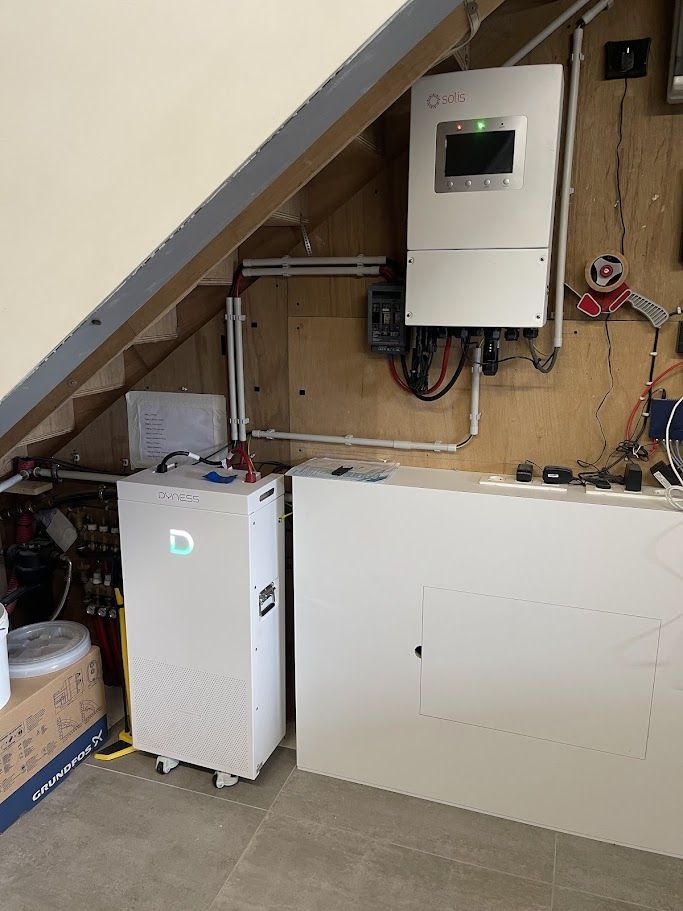
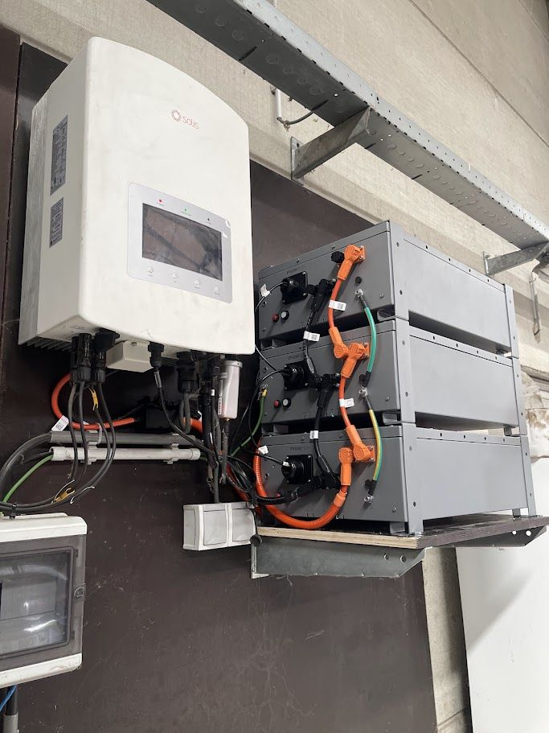

Solis + Dyness thuisbatterijHybride energiesysteem met batterijopslag.
Een thuisbatterij slaat overtollige zonne-energie op voor later. De juiste capaciteit bepalen we op basis van uw zonnepanelen, verbruik, omvormer en gewenste piekvermogens.
Een thuisbatterij slaat overtollige zonne-energie op, zodat u ze 's avonds zelf kunt gebruiken in plaats van ze aan het net te geven. De juiste capaciteit bepalen we op basis van uw zonnepanelen, verbruik, omvormer en gewenste piekvermogens.
U hebt rechtstreeks contact met uw installateur, van advies en offerte tot de uiteindelijke plaatsing.
Een selectie van installaties die we zelf hebben uitgevoerd.

